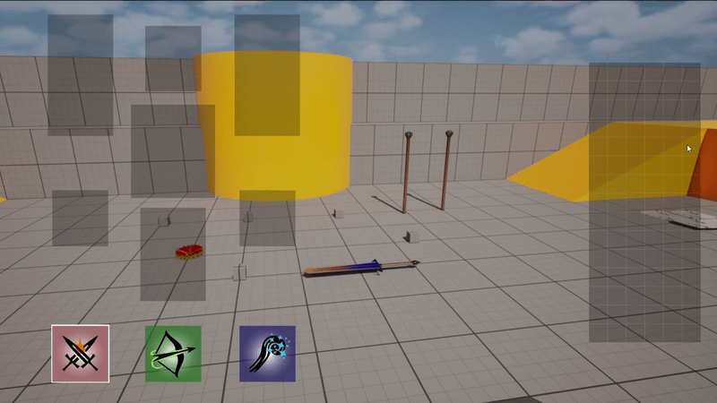
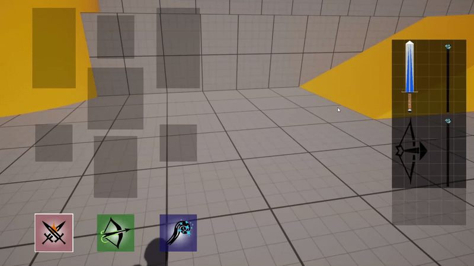
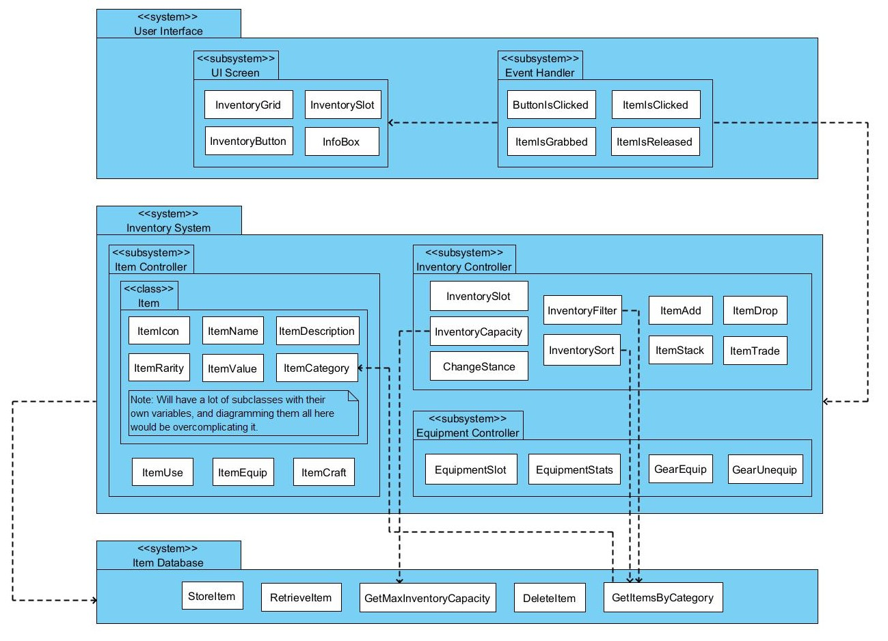
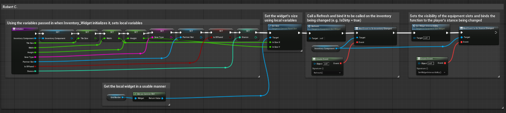

About the Game
Project Lamb is a dark fantasy action RPG, set in a world of corrupted regions that represent the seven deadly sins. The player must explore and fight their way through the land, guiding the people of these regions to a better life. My team, the inventory system team, was one of the earliest teams on the project, in which we made a spatial inventory system where placement and item sizee matters.

Project Lamb's Inventory System was my Undergrad Capstone project, and as such I am no longer on the team. It is still in active development, and everything seen here is from prototypes during my time on the project. As the project evolves and eventually comes out, a more up to date look on the current scope and gameplay of the project will be here.

My Contributions
The first thing I contributed to the project was a lot of documentation and design, such as the package diagram seen below. Being a capstone project in an IT program, it was unfortunately not very iterative and the whole team did a number of technical diagrams and designs.
The second thing I did was, as the database lead, create the backend for how items are stored in the inventory. As the inventory uses a grid-based system where size and orientation matter, storing items is more complicated here, requiring an array of sorts to be used that not only memorizes the objects stored in it, but also the state of the grid.
The third thing I did was pretty much singlehandely create the equipment system. Given that it has to interact with the inventory's grid, it uses a version of said grid system that transforms it into single cells for the equipment, no matter their size. These cells store to the player what the player has equipped in each slot, and includes other features like limiting slots based on type, two-handed weapons preventing you from equipping multiple things, stance changing between melee, range, & magic, and more.
The last thing I did was some polish, mainly through integrating everyone's work into pages the player can scroll through. This includes the item inventory, crafting menu, and equipment menu, much of which I have not shown, given that it was not my contribution.

